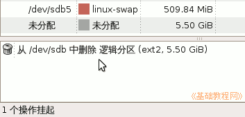
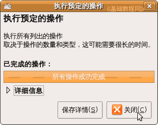

Gparted 分区编辑器基础
作者：TeliuTe 来源：基础教程网
三、删除分区 返回目录 下一课对于原先已有分区，可以进行删除操作，删除会丢失分区里的数据，因此要细心，下面我们来看一个练习；
1、删除分区
1）点菜单“系统－系统管理－分区编辑器”，出来一个窗口，里面有些分区前面有钥匙，表示已经挂载了，需要先卸载；
2）选中要删除的分区，瞄准点右键，选“卸载”命令；
3）然后钥匙图标消失，选中这个分区，点工具栏上的“删除”按钮；
4）然后下面的任务栏里，出来一条删除分区的操作，对应的分区显示为“未分配”；

5）如果点菜单“编辑－应用所有的操作”，就会出来一个提示，这儿是练习，点“取消”，再点菜单“编辑－清除所有操作”；
6）如果确定要删除，就点“应用”，稍等一会完成删除操作，点“关闭”返回；

7）窗口列表中的分区也变为“未分配”状态，删除完成；
本节学习了Ubuntu分区编辑器中删除分区的基本操作，如果你成功地完成了练习，请继续学习下一课内容；
本教程由86团学校TeliuTe制作|著作权所有
基础教程网：http://teliute.org/
美丽的校园……
转载和引用本站内容，请保留版权信息和本站链接。